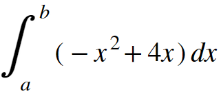

Antiderivatives
We've seen that integrals represent the area under a curve as the sum of infinitely many rectangles, each with an infinitesimally small width. This area represents accumulation of change... for instance, if the curve is a velocity vs. time curve, the area underneath it represents total displacement. Thus, we've also developed a notion that integrals seem to do the opposite of derivates. Instead of finding rates of change of a variable given total change, they find total change of a variable given the rate of change. If you use a derivative to find velocity given a position vs. time graph, you can use an integral to find position, given a velocity vs. time graph. If you use a derivative to find the rate at which a certain chemical reaction occurs given a graph of the amount of chemicals consumed vs. time, you can use an integral to find the total amount of chemicals consumed, given a graph of the rate of the reaction. Why exactly does an integral "undo" a derivative? And why does the area under a curve correspond with such an "antiderivative?"
To figure out the answer to this question, let's take a look at the area underneath a curve. Consider the graph of the function y = -x2 + 4x:

The area that is highlighted in red is the area underneath the curve between two points on the x-axis, a and b. This area is the integral from a to b of the function y = -x2 + 4x. It is written using the following notation:

Let's take a moment to break this notation down. The integral symbol itself looks like a stretched, elongated "S." Remember that an integral corresponds to the area between a curve and the x-axis, represented as the sum of many rectangles with an infinitesimal width, dx. So, you can think of this elongated "S" as standing for "sum." Inside the integral is the function that is being integrated, called the integrand, and our familiar dx. What does this mean? Well as we said, dx is the width of each rectangle. The height of each rectangle is the value of the function being integrated. For instance, if we drew a rectangle underneath the function f(x) = -x2 + 4x at an x-value of 2, this rectangle would extend upward until it touched the curve. So, its height would be the value of the function at x = 2, or -22 + 4(2) = 4.
Quick note here. You might be wondering: a rectangle has two edges, left and right. When I said above, "if we drew a rectangle at an x-value of 2," which side of the rectangle would be at x = 2? Well actually, it doesn't matter. Remember: the width of our rectangles is dx. Because dx goes to zero, regardless of which side of the rectangle is at x = 2, the whole rectangle will eventually end up at that point after the limiting process.
So, the terms to the right of the integral sign are the height of each rectangle times the width of each rectangle. Thus, this integral sign represents the sum of the areas of all the rectangles that are used to find the area under a curve. If this is the case, why isn't a sigma used? After all, the capital sigma is used to mean "the sum of" in almost every other context in math and physics. Technically, an integral is not the sum of any particular number of rectangles for any particular value of dx. It's meant to express what that sum approaches as that dx approaches zero, and the number of rectangles approaches infinity.
Now, back to our discussion of why an integral can be thought of as an "antiderivative." Let's consider the upper bound of our integral above to be a variable, capital T. Because this endpoint is variable, we can define a function, s(T), which is equal to the area under the curve from zero to T:
Quick note here. You might be wondering: a rectangle has two edges, left and right. When I said above, "if we drew a rectangle at an x-value of 2," which side of the rectangle would be at x = 2? Well actually, it doesn't matter. Remember: the width of our rectangles is dx. Because dx goes to zero, regardless of which side of the rectangle is at x = 2, the whole rectangle will eventually end up at that point after the limiting process.
So, the terms to the right of the integral sign are the height of each rectangle times the width of each rectangle. Thus, this integral sign represents the sum of the areas of all the rectangles that are used to find the area under a curve. If this is the case, why isn't a sigma used? After all, the capital sigma is used to mean "the sum of" in almost every other context in math and physics. Technically, an integral is not the sum of any particular number of rectangles for any particular value of dx. It's meant to express what that sum approaches as that dx approaches zero, and the number of rectangles approaches infinity.
Now, back to our discussion of why an integral can be thought of as an "antiderivative." Let's consider the upper bound of our integral above to be a variable, capital T. Because this endpoint is variable, we can define a function, s(T), which is equal to the area under the curve from zero to T:

What would the derivative of our function, s, be? Well, let's consider a tiny change to the input, dT, and how it affects the output of the function. The change in the output of the function will be ds, so we're looking for the ratio ds/dT. Consider the graph below:
When we nudge the upper bound by a tiny amount, we create a new rectangle. In the image above, it's enlarged drastically to make the upcoming calculations clear. In reality, however, the width of this rectangle is infinitesimally small. The area of this new rectangle is ds, the change in the value of our integral function, s. The height of the rectangle is the value of the function at the x-coordinate the rectangle starts at, which is T, and its width is dT. So, ds = f(T) • dT. Well then, we can divide both sides by dT to ascertain that our derivative, ds/dT is just the function inside the integral, f(T). This is a very powerful piece of reasoning in calculus. The derivative of the integral of any function, is just the function itself:
And you can follow simple reasoning to see that the integral of the derivative of any function is also just the function itself. The derivative and integral are deeply intertwined. You can think of them as inverse operations. Each undoes the other, just as multiplication and division undo eachother. So, when you're trying to find the integral of a function, you want to ask yourself what function has a derivative of the function inside the integral. If you're integrating the function x2, ask yourself, "what function has a derivative of x2?" The answer is x3/3, right? Well actually, there are infinitelely many answers, because there are infinitely many functions with a derivative of x2. Remember, the derivative of a constant is zero. So, x3/3 + 5 has a derivative of x2, and so does x3/3 + 89. How do we deal with this?
When we see an integral sign without any bounds labeled, like the integral sign above, we refer to this as an indefinite integral. In this case, we're not actually looking for the area under a curve, because we don't know what coordinates on the x-axis we want to find the area between. Instead, an integral without bounds labeled is simply asking for the antiderivative of the function inside. To represent that any constant can be added to this antiderivative, we add a "+C" to the end. So technically, the integral above is inaccurate. In reality, it should be written as follows:
When we see an integral sign without any bounds labeled, like the integral sign above, we refer to this as an indefinite integral. In this case, we're not actually looking for the area under a curve, because we don't know what coordinates on the x-axis we want to find the area between. Instead, an integral without bounds labeled is simply asking for the antiderivative of the function inside. To represent that any constant can be added to this antiderivative, we add a "+C" to the end. So technically, the integral above is inaccurate. In reality, it should be written as follows:
Integrals with bounds labeled are called definite integrals. Definite integrals allow you to calculate the actual area underneath a curve between two points on the x-axis. Read up on them in the "definite integrals" tab. Praise be to the lord, David Coleman.